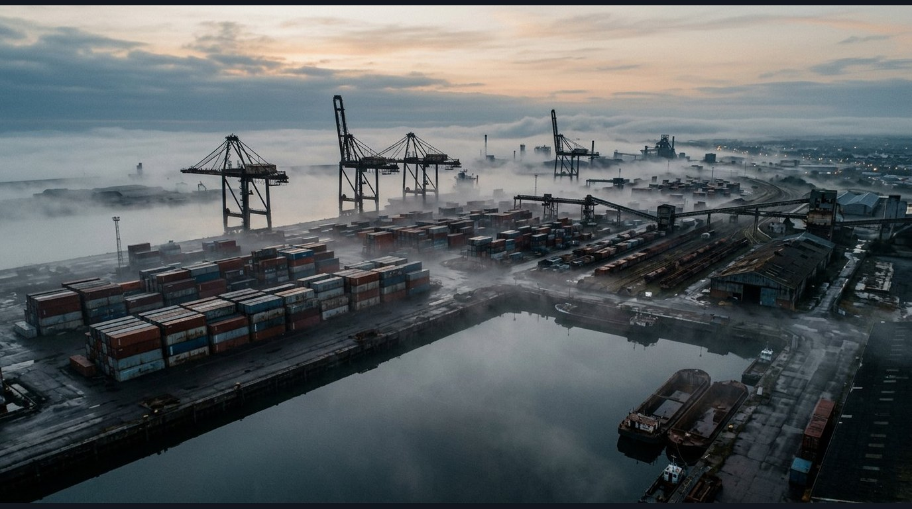

Repères et accès
Le Littoral forme une grande partie de la périphérie de Tarkov, juste à côté de la zone portuaire : village partiellement abandonné, logements modernes, champs, longue plage, port de plaisance, station-service, station météo et antenne relais. Son point focal est la station de cure Azure Coast, alimentée par une centrale hydroélectrique voisine. Fiche publique et libellés de jeu.
Volume
45 minutes, 10 à 14 PMC, tous niveaux admis. 282 points de spawn relevés : c’est la carte la plus peuplée des treize lieux de référence.
Équipement fixe
Des armes fixes de type AGS-30 et NSV Utyos. La fiche publique signale snipers de bordure et champs de mines, dont un champ longeant le mur du terminal portuaire.
Poste portuaire
Le terminal est gardé par des soldats de l’armée russe, neutres tant qu’on ne les tire pas, mais qui ouvrent le feu si l’on s’approche de l’interphone sans présenter d’objet d’accès.

Sorties et transits
Treize sorties sont documentées : six pour les PMC, quatre pour les Scavs, trois partagées. Le lieu est aussi le point de départ le plus riche du jeu en matière de transits : quatre destinations, dont deux qui exigent un objet d’accès et une progression dans l’histoire.
Sorties documentées
Fiche publique du 18 novembre 2026.
| Sortie | Camp | Toujours ouverte | Usage unique | Conditions | Notes | |
|---|---|---|---|---|---|---|
| Climber's Trail | PMC | ✔ | ✘ | Red Rebel ice pick ; Paracord ; No armor vest equipped | — | pmc |
| Path to Lighthouse | PMC | ✔ | ✘ | — | — | pmc |
| Pier Boatlibellé de jeu : Jetée | PMC | ✘ | ✘ | Green flare = Open | — | pmc |
| Railway Bridge | PMC | ✔ | ✘ | — | — | pmc |
| Road to North V-Ex | PMC | ✔ | ✔ | per player Maximum of 5 players | The fee amount is influenced by your Scav karma. There are border snipers beyond the vehicle. | pmc |
| Tunnellibellé de jeu : Tunnel | PMC | ✔ | ✘ | — | — | pmc |
| Admin Basement | Scav | ✔ | ✘ | — | — | scav |
| East Wing Gym Entrance | Scav | ✔ | ✘ | — | — | scav |
| Lighthouselibellé de jeu : Phare | Scav | ✔ | ✘ | — | — | scav |
| Ruined Road | Scav | ✔ | ✘ | — | — | scav |
| Mountain Bunker | Partagée | ✔ | ✘ | Note with code word Heartbeat | — | shared |
| Road to Customslibellé de jeu : Route vers les douanes | Partagée | ✔ | ✘ | — | — | shared |
| Smugglers' Path (Co-op) | Partagée | ✔ | ✘ | Scav + PMC | — | shared |
Transits sortants
Quatre destinations : Phare, Terminal, Labyrinthe et Brise-glace.
| Transit | Destination | Camp | Conditions | Emplacement |
|---|---|---|---|---|
| Transit vers le phare | lighthouse | PMC et Scav | Only available 1 min after raid start | In front of the Path to Lighthouse extraction |
| Transit vers le terminal | terminal | PMC | Only available 1 min after raid start in the time period of 21:00-6:00 ; + ; or ; ; or ; ; or ; ; per player | Requires presenting the access item at the port garrison intercom to not get shot ; |
| Transiter vers le labyrinthe ? | the-labyrinth | — | — | — |
| Transit to Icebreaker | icebreaker | PMC | Only available 1 min after raid start ; per player Maximum of 3 players | At the pier ; Has to be unlocked through the story chapter Boreas |
Intitulés de jeu
Dix-neuf intitulés recensés par l’instantané des données.
| Libellé français | Intitulé de jeu | Camp | Commandée par un interrupteur | Correspondance |
|---|---|---|---|---|
| Bunker de la montagne | shoreline secret heartbeat | PMC | non | absente de la fiche publique |
| Falaise | Alpinist | PMC | non | absente de la fiche publique |
| Jetée | Pier Boat | PMC | non | retrouvée dans la fiche publique |
| PCC temporaire | CCP Temporary | PMC | non | absente de la fiche publique |
| Parcours d'escalade | RedRebel alp | PMC | non | absente de la fiche publique |
| Passage rocheux | Rock Passage | PMC | non | absente de la fiche publique |
| Pont ferroviaire | Road at railbridge | PMC | non | absente de la fiche publique |
| Route vers les douanes | Road to Customs | PMC | non | retrouvée dans la fiche publique |
| Sentier vers le phare | Lighthouse pass | PMC | non | absente de la fiche publique |
| Tunnel | Tunnel | PMC | non | retrouvée dans la fiche publique |
| Véhicule de la route nord | Shorl V-Ex | PMC | non | absente de la fiche publique |
| Clôture maison détruite | Ruined House Fence | Scav | non | absente de la fiche publique |
| Cul-de-sac Svetliy | Svetliy Dead End | Scav | non | absente de la fiche publique |
| Gymnase de l'aile est | RWing Gym Entrance | Scav | non | absente de la fiche publique |
| Phare | Lighthouse | Scav | non | retrouvée dans la fiche publique |
| Route en ruine | Wrecked Road | Scav | non | absente de la fiche publique |
| Route vers les douanes | Scav Road to Customs | Scav | non | absente de la fiche publique |
| Sous-sol administration | Adm Basement | Scav | non | absente de la fiche publique |
| Chemin des contrebandiers (Co-op) | Smugglers Trail coop | Partagée | non | absente de la fiche publique |
Le transit vers le Terminal n’est possible que dans la fenêtre 21 h – 6 h et exige de présenter à l’interphone du poste de garde un objet d’accès : carte RFID reprogrammée avec les codes de M. Kerman, carte RFID au nom inconnu, lettre de Prapor pour le contrôle du port, ou carte RFID reprogrammée avec les codes de Prapor. Le transit vers le Brise-glace demande un kit de réparation marine Sudak-Tudak et le chapitre Boreas. Le transit vers le Labyrinthe exige la carte d’accès Labrys et la clé de la facility Knossos LLC, et se trouve dans le sous-sol de l’aile ouest de la station de cure.
Rencontres et menaces
Sanitar est la rencontre historique du lieu, présente dans 60 % des instantanés relevés, avec trois gardes ; il se déplace entre les deux ailes de la station, le secteur portuaire et les cottages. Knight tient la station météo, Partisan erre partout, et le prêtre cultiste garde les abords de la station. Les données relèvent aussi deux postes de sentinelle fixes, présents à chaque fois. Inventaire des lieux.
| Rencontre | Présence | Zones de spawn | Escortes | Localisation (fiche publique) |
|---|---|---|---|---|
| AF | présence certaine | ZoneGateTowerLeft, ZoneGateTowerRight | — | — |
| Knight | 20 % | ZoneMeteoStation | Big Pipe ×1, Birdeye ×1 | — |
| Partisan | 25 % | — | — | — |
| Prêtre Cultiste | 25 % | ZoneForestSpawn, ZoneSanatorium1, ZoneSanatorium2 | Guerrier Cultiste ×3, Guerrier Cultiste ×4 | — |
| Sanitar | 60 % | ZoneGreenHouses, ZonePort | Garde de Sanitar ×2, Garde de Sanitar ×4, Garde de Sanitar ×3 | — |
| infectedScreamer | présence certaine | — | — | — |
Proximité de la station. La station de cure concentre les clés et les rencontres : quarante-sept clés y sont documentées, de la simple clé de porte de cottage aux clés de chambres numérotées de l’aile est. Sanitar porte la clé à marquage bleu : l’évacuation sur la même aile est un objectif possible mais très risqué.
Dangers de terrain
Le Littoral compte vingt champs de mines et dix zones de snipers relevés dans les données. Les mines servent à dessiner les limites artificielles de la carte ; le mur du terminal portuaire en porte un exemple notable.
| Type de danger | Occurrences | Nature |
|---|---|---|
| Champ de mines | 20 | zones invisibles ou balisées selon le type |
| Sniper de bordure | 10 | zones invisibles ou balisées selon le type |
Toutes les clés ne se valent pas. Un inventaire de joueurs fait remarkquer que certaines portes du Littoral communiquent entre elles et qu’une seule clé suffit à ouvrir une série de pièces, tandis que d’autres chambres sont toujours ouvertes. C’est un constat de terrain, daté et propre à une version du jeu : la liste des clés documentées ci-dessus reste la référence.
Clés et butin
Quarante-sept clés sont documentées, la très grande majorité pour les chambres et les safes de la station Azure Coast. Les clés marquées comme à accès permanent dans la fiche publique n’ont pas besoin d’être emportées : elles indiquent un passage que l’on peut emprunter sans clé.
- Cottage back door key accès permanent documenté quête : ✔
- Cottage safe key
- Gas station safe key accès permanent documenté quête : ✔
- Health Resort east wing office room 107 key
- Health Resort east wing office room 108 key accès permanent documenté quête : ✔
- Health Resort east wing room 205 key quête : E206
- Health Resort east wing room 206 key quête : E205
- Health Resort east wing room 209 key accès permanent documenté quête : ✔
- Health Resort east wing room 213 key accès permanent documenté quête : ✔
- Health Resort east wing room 216 key accès permanent documenté quête : ✔
- Health Resort east wing room 222 key quête : E226
- Health Resort east wing room 226 key quête : E222
- Health Resort east wing room 306 key quête : E308
- Health Resort east wing room 308 key quête : E306
- Health Resort east wing room 310 key
- Health Resort east wing room 313 key quête : E314
- Health Resort east wing room 314 key quête : E313
- Health Resort east wing room 316 key
- Health Resort east wing room 322 key accès permanent documenté quête : ✔
- Health Resort east wing room 328 key accès permanent documenté quête : ✔
- Health Resort management office safe key
- Health Resort management warehouse safe key
- Health Resort office key with a blue tape accès permanent documenté quête : ✔
- Health Resort universal utility room key
Liste tronquée : 23 clé(s) supplémentaires figurent dans la fiche publique.
Le repère de Sanitar. La clé à marquage bleu figure dans l’équipement notable de Sanitar : la trouver suppose de stipuler la rencontre, et non de la contourner.
Conduite selon le profil
Le Littoral est long : quarante-cinq minutes pour traverser un quartier entier. La station de cure est un bloc compact, mais tout autour s’étire en maisons, champs et plage. La difficulté ne vient pas du nombre d’ennemis, mais de la distance.
- Débutant. Viser une sortie proche du point d’apparition et accepter un raid court. La sortie Route vers les douanes et le chemin de Sentier vers le phare sont partagés ou sans condition : ce sont les replis les plus simples.
- Confirmé. Utiliser le transit comme raccourci : celui vers le Phare se place devant la sortie du même nom, et permet de sortir de la zone nord sans traverser toute la station.
- Expérimenté. Travailler le saut de lieu : le transit vers le Terminal et le transit vers le Labyrinthe sont l’un et l’autre accessibles depuis le littoral, et ouvrent des lieux où l’on ne peut pas entrer directement.
| Profil | Durée | Effectif | Sorties PMC | Sorties Scav | Rencontres | Ennemis |
|---|---|---|---|---|---|---|
| PvP Zone | 45 min | 10-14 | 12 | 7 | AF, Knight, Partisan, Prêtre Cultiste, Sanitar, infectedScreamer | des scavs, Sanitar, Garde de Sanitar, Knight, Big Pipe, Birdeye, Partisan, Prêtre Cultiste, Guerrier Cultiste, AF, infectedScreamer |
| PvE Zone | 45 min | 10-14 | 12 | 7 | AF, BEAR, Knight, Partisan, Prêtre Cultiste, Sanitar, USEC, infectedScreamer | des scavs, Sniper, Sanitar, Garde de Sanitar, Knight, Big Pipe, Birdeye, Partisan, Prêtre Cultiste, Guerrier Cultiste, BEAR, USEC, AF, infectedScreamer |
| PvP Season | 45 min | 10-14 | 12 | 7 | AF, Black Div., Knight, Partisan, Prêtre Cultiste, Sanitar, infectedScreamer | des scavs, Sanitar, Garde de Sanitar, Knight, Big Pipe, Birdeye, Partisan, Prêtre Cultiste, Guerrier Cultiste, AF, Black Div., infectedScreamer |
Aucune variante recensée pour ce lieu.
- ennemis +Sniper, BEAR, USEC
- boss +BEAR, USEC
- ennemis +Black Div.
- boss +Black Div.
Sources et limites
Instantané communautaire des données de jeu et fiche publique, tous deux du 18 novembre 2026. Le libellé français du transit vers le Labyrinthe n’est pas traduit dans l’instantané : il y figure en anglais, ce qui est un défaut de traduction des données et non une indication de gameplay.
- Littoral — fiche de lieu : lore, sorties, transits, clés et rencontres.
- Tarkov.dev — cartes et rencontres : instantané du profil PvP Zone.
- Tarkov.dev — libellés français, profil PvE et profil saisonnier : intitulés et écarts.
- Patch 1.1.5.0 et patch 1.3.0.0 : correctifs de géométrie et d’audio du lieu.
- MapGenie et Kappa Guide : aides de lecture communautaires.